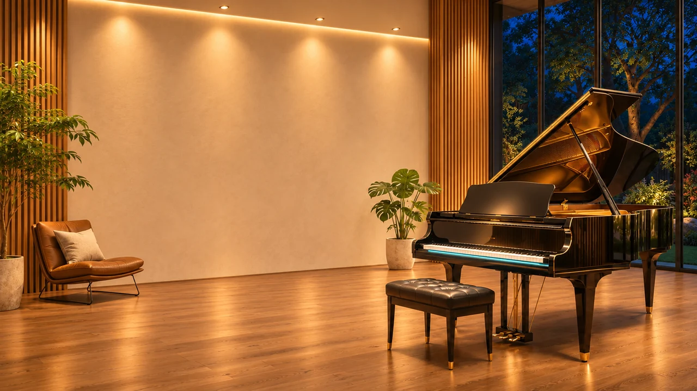

Muzika jote, në rrjedhë.
Gjej pjesën që të frymëzon, krijo lista dhe kalo natyrshëm nga dëgjimi te të luajturit.
PianoCore · Crystal Studio
Pianoja jote, në një studio që të frymëzon. Zbulo pjesë të reja, ndiq notat dhe gjej kënaqësinë e të luajturit — me ritmin tënd.
Dëgjo.Luaj.Përparo.

Një tjetër mënyrë për ta jetuar muzikën
Nga kënga që do të dëgjosh te pjesa që dëshiron të zotërosh. Gjithçka gjen vendin e vet.
Gjej pjesën që të frymëzon, krijo lista dhe kalo natyrshëm nga dëgjimi te të luajturit.
Notat rrëshqasin drejt tastierës prej kristali. Drita dhe ngjyra të ndihmojnë ta ndjekësh muzikën me sy.
Partiturë, nota që bien ose të dyja bashkë. Zgjidh pamjen që të bën të ndihesh më pranë muzikës.
Mësimi
Merr frymë. Provoje sërish. Praktika e udhëhequr të jep hapësirën që duhet për ta bërë një pjesë tënden.
Kalo te nota tjetër kur të jesh gati.
Përsërit një fragment dhe ngadalëso ritmin.
Mësimet dhe përparimi qëndrojnë pranë teje.
Një vend për muzikën tënde
Një ambient i ngrohtë për seancat e ditës. Një studio e qetë kur bie mbrëmja. Zgjidh dritën që të frymëzon.


PianoCore bashkon muzikën, dritën dhe të mësuarit në një përvojë të vetme.
Rikthehu në studioKy website prezanton PianoCore. Zgjedhja e pamjes ruhet vetëm në këtë shfletues. Ilustrimi muzikor luhet pa audio.